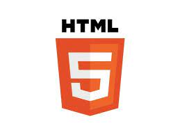
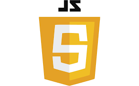

HTML
Es un lenguaje de marcado donde marcamos que elementos existen dentro de una pagina utilizando etiquetas.
CSS

Es un lenguaje de estilos que nos permite elegir como se ven y donde se ven los elementos de nuestra pagina.
JavasCript
Es un lenguaje de programacion en el cual escribimos la interactividad de nuestro sitio web.